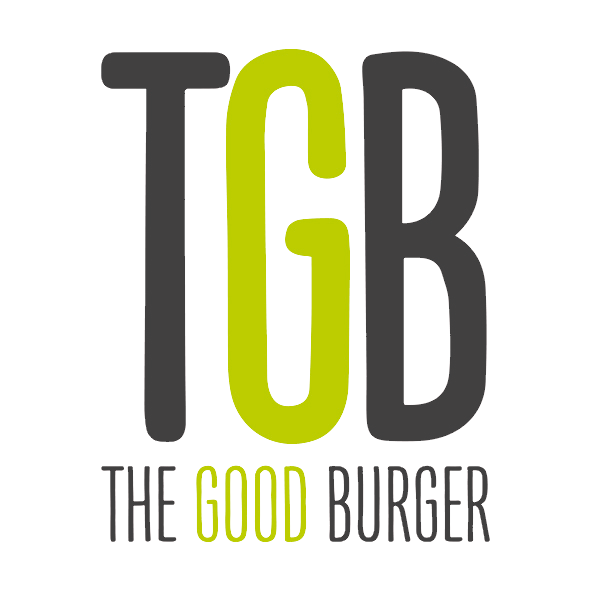
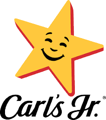
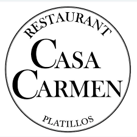
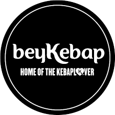
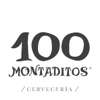

Especialidad: Cocina española y mediterránea
Origen: España (2013)
Ambiente: Elegante y acogedor
Qué ofrecen: Croquetas, arroces, carnes y postres artesanales.
Curiosidad: Ideal para comidas familiares o reuniones de negocios.
Visitar sitio